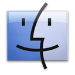
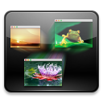
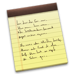
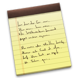
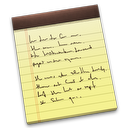

我的所有文件
欢迎使用"邮件"
欢迎使用"邮件"
您将被引导设置完成邮件账户的步骤。
要开始设置，请提供以下信息：
全名:
电子邮件地址:
密码:
取消
返回
继续


关于本机
软件更新...
App Store...
系统偏好设置...
Dock
启用隐藏
⌘D
关闭放大
放在左边
放在底部
放在右边
Dock偏好设置...
最近使用的项目
应用程序
App Store
Face Time
iTunes
Photo Booth
Safari
备忘录
提醒事项
通讯录
系统偏好设置
邮件
文稿
VMware Tools.pkg
关于下载
服务器
清除菜单
强制退出...
⌘
睡眠
重新启动...
关机
注销 userName
⌘Q
Finder
关于Finder
偏好设置
⌘
清倒废纸篓...
⌘
安全清倒废纸篓..
服务
隐藏Finder
⌘H
隐藏其他
⌘H
全部显示
文件
新建Finder窗口
⌘N
新建文件夹
⌘N
用所选项目新建文件夹
⌘N
新建智能文件夹
⌘N
新建刻录文件夹
打开
⌘O
打开方式
打印
⌘P
关闭窗口
⌘W
显示简介
⌘|
压缩
复制
⌘D
制作替身
⌘L
快速查看
⌘Y
显示原身
⌘R
添加到边栏
⌘T
移到废纸篓
⌘
推出
⌘E
将"桌面"刻录至光盘..
查找
⌘F
标签
编辑
撤销移动2项
⌘Z
重做
⌘Z
剪切
⌘X
拷贝
⌘C
粘贴
⌘V
全选
⌘A
显示剪贴板
开始听写...
fn fn
特殊字符...
显示
为图标
⌘1
为列表
⌘2
为分栏
⌘3
为Cover Flow
⌘4
整理
整理方式按
排序方式按
隐藏路径栏
隐藏状态栏
⌘/
隐藏边栏
⌘S
工具栏
⌘T
自定工具栏...
查看显示选项
⌘J
前往
向后
⌘[
向前
⌘]
上层文件夹
⌘↑
我的所有文件
↑⌘F
文稿
↑⌘O
桌面
↑⌘D
下载
↑⌘L
个人
⌘H
电脑
↑⌘C
网络
↑⌘K
应用程序
↑⌘A
实用工具
↑⌘U
最近使用的文件夹
前往文件夹...
↑⌘G
链接服务器...
⌘K
窗口
最小化
⌘M
缩放
循环显示窗口
⌘`
前置全部窗口
帮助
搜索
帮助中心
Time Machine尚未配置
浏览其它备份磁盘
打开Time Machine偏好设置
周四 下午14:00
2014年1月15日星期三
以模拟方式显示
以数码方式显示
打开日期与实践偏好设置
Spotlight

 
